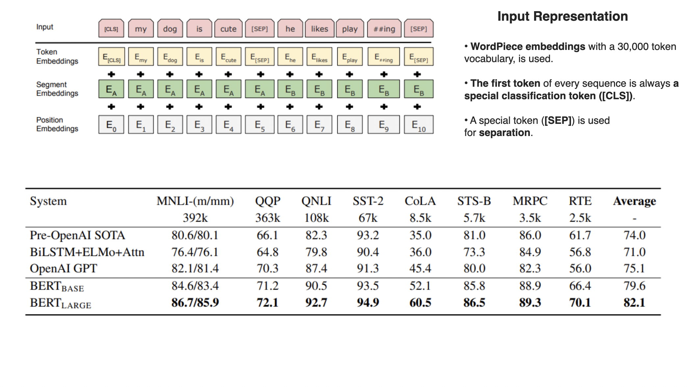

An Analysis of BERT: Pre-training of Deep Bidirectional Transformers for Language Understanding
Abstract:
We introduce a new language representation model called BERT,
which stands for Bidirectional Encoder
Representations from Transformers. Unlike
recent language representation models [2] [3],
BERT is designed to pretrain deep bidirectional representations from unlabeled text
by jointly conditioning on both left and right context in all layers. As a result,
the pre-trained BERT model can be finetuned with just one additional output layer to
create state-of-the-art models for a wide range of tasks, such as question answering
and language inference, without substantial taskspecific architecture modifications.
BERT is conceptually simple and empirically powerful. It obtains new state-of-the-art
results on eleven natural language processing tasks, including pushing the GLUE score
to 80.5% (7.7% point absolute improvement), MultiNLI accuracy to 86.7% (4.6% absolute
improvement), SQuAD v1.1 question answering Test F1 to 93.2 (1.5 point absolute
improvement) and SQuAD v2.0 Test F1 to 83.1 (5.1 point absolute improvement).
Literature Review
There is a long history of pre-training general language representations
Feature-based
- Hinton'09, Turian'10, Le'14, Kiros'15, Peters'17, Lee'18
- Mikolov'13, Kiros'15, Hill'16, Malamud'16
Fine-tuning
- Dai'15, Ruder'18, Radford'18 {OpenAI GPT}
- Deng'09, Yosinski'14, Conneau'17, McCann'17
Biography

C: ? H: ?
Software Engineer @ Google
MS CS @ University of Maryland

C: 98,000+ H: 47
Research scientist @ Google
PHD CS @ UIUC

C: 109,000+ H: 32
Research scientist @ Google
PHD CS @ University of Washington

C: 103,000+ H: 49
Research scientist @ Google
PHD CS @ Stanford University
Diagrams

Social Impact
Positive Impact
- Advancements in Chatbots and Virtual Assistants: BERT has contributed to the development of more sophisticated and context-aware chatbots and virtual assistants, enabling more natural and effective human-computer interactions.
- Enhanced Search Engine Results: Search engines like Google use BERT to better understand the context and nuances of search queries, leading to more accurate and relevant search results. This has improved the overall search experience for users.
Negative Impact
- Challenges in Bias and Fairness: The training data used for models like BERT may contain biases present in the language data. As a result, these biases can be perpetuated or even amplified in the model's output, potentially leading to biased or unfair results. Addressing bias and ensuring fairness in language models is an ongoing challenge.
- Privacy Concerns: The use of large language models raises privacy concerns, especially when handling sensitive information. There are risks associated with the unintentional generation of sensitive content or the extraction of sensitive information from the training data.
- Resource Intensiveness: Training large models like BERT requires significant computational resources, which can contribute to environmental concerns. Additionally, deploying and running such models in production may require substantial computational power.
Industry Applications
- Chatbots & Virtual Assistants: Better at understanding NLP queries.
- Text summarization: For generating meaningful summaries of longer texts.
- E-commerce: can enhance the search and recommendation systems in e-commerce platforms by better understanding user queries.
- Financial Analysis: BERT is used in financial applications for tasks such as sentiment analysis of financial news.
- Search Engines: Improves understanding of user queries.
- Medical & Healthcare: BERT has been applied to medical and healthcare domains for tasks such as clinical text analysis, medical record summarization, and information extraction from medical literature.
- Content generation: BERT can be used in content generation tools to produce high-quality and contextually relevant text.
- Human Resources: Assists in the analysis of resumes and job descriptions.
Follow-on Research
Note: The following papers were released within one year of BERT (May 2019 - Oct 2019)
- ERNIE [4] : Incorporates information-rich knowledge graphs during pre-training to enhance language representation with lexical, syntactic, and knowledge information simultaneously.
- XLNet [5] : Enables bidirectional context learning through permutation-based training and addresses the "pretrain-finetune discrepancy" (dependency between masked tokens) with its autoregressive formulation.
- RoBERTa [6] : Improves over BERT by conducting a meticulous replication study, optimizes key hyperparameters, and demonstrates that BERT was significantly undertrained.
- ALBERT [7] : Introduces two parameter-reduction techniques to enhance memory efficiency and training speed with scalability, and incorporates a self-supervised loss for inter-sentence coherence modeling.
- DistilBERT [8] : Uses knowledge distillation to compress BERT during pre-training, and shows that it is possible to reduce the size of a BERT model by 40%, while retaining 97% of its language understanding capabilities and being 60% faster.
- T5 [9] : Introduces a unified text-to-text framework for transfer learning in NLP, and systematically explores various pre-training objectives, architectures, and transfer learning approaches.
Peer-Review
References
[1] Jacob Devlin, Ming-Wei Chang, Kenton Lee, Kristina Toutanova. BERT: Pre-training of Deep Bidirectional Transformers for Language Understanding. arXiv.org (2018, October 11).
[2] Matthew E. Peters, Mark Neumann, Mohit Iyyer, Matt Gardner. Christopher Clark, Kenton Lee, Luke Zettlemoyer. Deep contextualized word representations. arXiv.org (2018, March 22).
[3] Alec Radford, Karthik Narasimhan, Tim Salimans, Ilya Sutskever. Improving Language Understanding by Generative Pre-Training. OpenAI (2018, June 11).
[4] Zhengyan Zhang, Xu Han, Zhiyuan Liu, Xin Jiang, Maosong Sun, Qun Liu. ERNIE: Enhanced Language Representation with Informative Entities. arXiv.org (2019, May 17).
[5] Zhilin Yang, Zihang Dai, Yiming Yang, Jaime Carbonell, Ruslan Salakhutdinov, Quoc V. Le. XLNet: Generalized Autoregressive Pretraining for Language Understanding. arXiv.org (2019, June 19).
[6] Yinhan Liu, Myle Ott, Naman Goyal, Jingfei Du, Mandar Joshi, Danqi Chen, Omer Levy, Mike Lewis, Luke Zettlemoyer, Veselin Stoyanov. RoBERTa: A Robustly Optimized BERT Pretraining Approach. arXiv.org (2019, July 26).
[7] Zhenzhong Lan, Mingda Chen, Sebastian Goodman, Kevin Gimpel, Piyush Sharma, Radu Soricut. ALBERT: A Lite BERT for Self-supervised Learning of Language Representations. arXiv.org (2019, September 26).
[8] Victor Sanh, Lysandre Debut, Julien Chaumond, Thomas Wolf. DistilBERT, a distilled version of BERT: smaller, faster, cheaper and lighter. arXiv.org (2019, October 2).
[9] Colin Raffel, Noam Shazeer, Adam Roberts, Katherine Lee, Sharan Narang, Michael Matena, Yanqi Zhou, Wei Li, Peter J. Liu. Exploring the Limits of Transfer Learning with a Unified Text-to-Text Transformer. arXiv.org (2019, October 23).
Team Members
Chandra Teja Kommineni, Ekam Chahal, Debajyoti Chakraborty